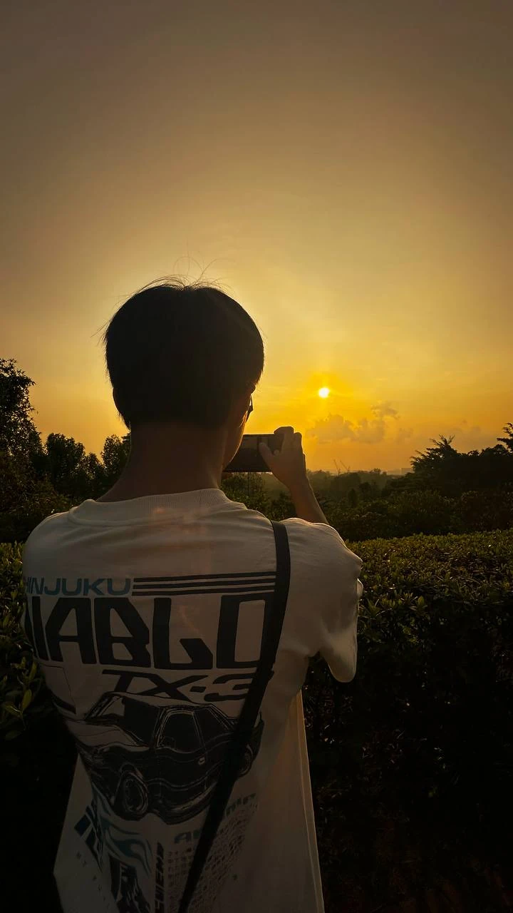

Chinese Pagoda
Urban · Zi Yu

Chinese Canal Town
Urban · Zi Yu

Quiet Lake
Nature · Kai Yang

Chinese Canal Street
Urban · Zi Yu

Cranes on the Horizon
Nature · Kai Yang

Forest Trails
Nature · Kai Yang